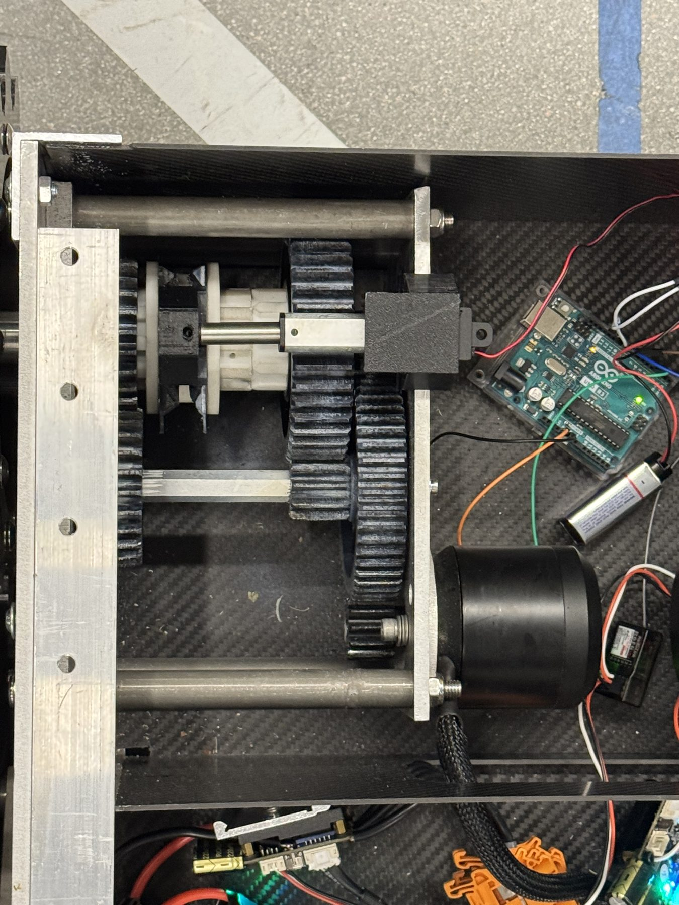
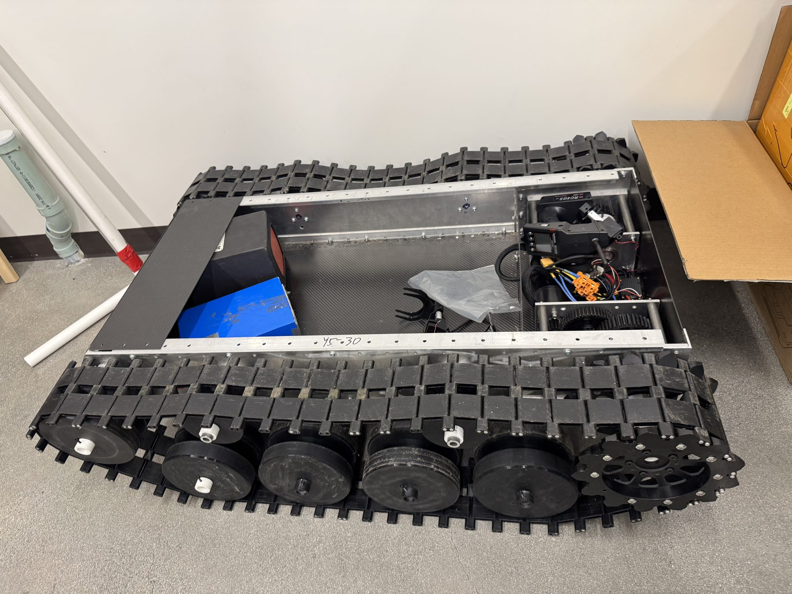

My classmate Larry Liu had been developing a tracked robot at Pomona for several years. The larger project explored a casualty-recovery vehicle that could navigate difficult terrain and potentially help retrieve injured people. Larry had also connected with a Ukrainian company working on computer vision and autonomous navigation for related applications.
I joined Larry to design and fabricate a two-speed transmission for the tank. The mechanism used a linear actuator to shift between two gear ratios: one favoring torque for rough terrain, the other allowing higher speed on easier ground.
My work centered on the mechanical design, fabrication, packaging, and integration of the shifting mechanism into the existing vehicle. Unlike a class project with a clean starting point, this required fitting a new subsystem into a robot that had already been developed over several years. It was a useful introduction to designing around real hardware constraints.
